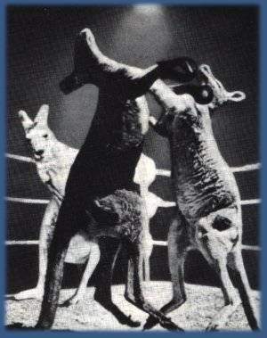

Lyrics / Reviews / Tabs
Talk In Circles
Discography Index
Produced by NICK LAUNAY and MIDNIGHT OIL
Didjeridu: Charles McMahon
Office: Stephanie Lewis
Special Thanks to Michael lippold
Thanks to Aki Tanaka, 2JJJ, Lesley, Clare, Annette,
All Songs MIDNIGHT OIL
Engineered and Mixed by NICK LAUNAY
Assistant Engineers: Shigeo Miyamoto, Yoshiyuki Kaneko
Reocrded and mixed at Victor Aoyama Studio.
Tokyo June-August 1984
String and Brass Arrangemnets: Kazufumi Ohhama and James Moginie
Cover Artwork: Tsunehisa Kimura
Sleeve Design and Graphic: Yasutaka Kato
Tour Manager: Neil Thompson
Live: Michael Lippold (everything), Ron James (lights), Gary "Rocket" Fox (sound)
Doris, Kerrie, Irma Trnka, Isamu Hashiguchi, Shig and Yoshi
Song Titles: SPRINT MUSIC REGISTER APRA.
Administered by Warner Bros. Music Australia Pty. Ltd.
AUSTRALIAN PERFORMANCE / AUSTRALIAN COMPOSITIONS
(© 1984 MIDNIGHT OIL)
Midnight Oil: James Moginie
Rob Hirst
Martin Rotsey
Peter Gifford
Peter Garrett
Gary Morris (Business)
Lines from "Harrisburg" taken from the book "The Great Prawn
War and Other Stories" by Denis Kevans ©1983
Used with kind permission.
Released October 1984
463083
{kind=link}